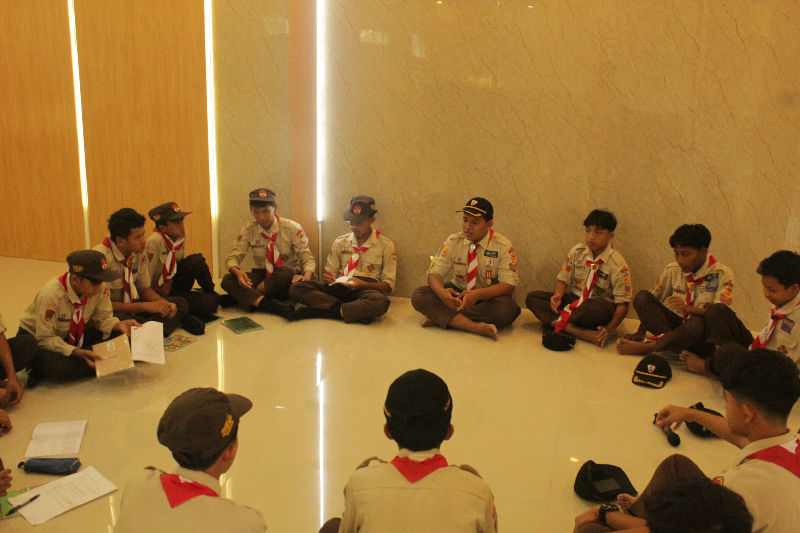
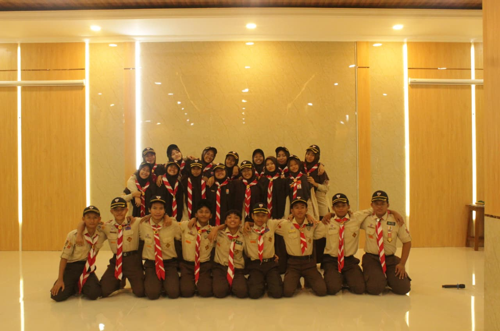
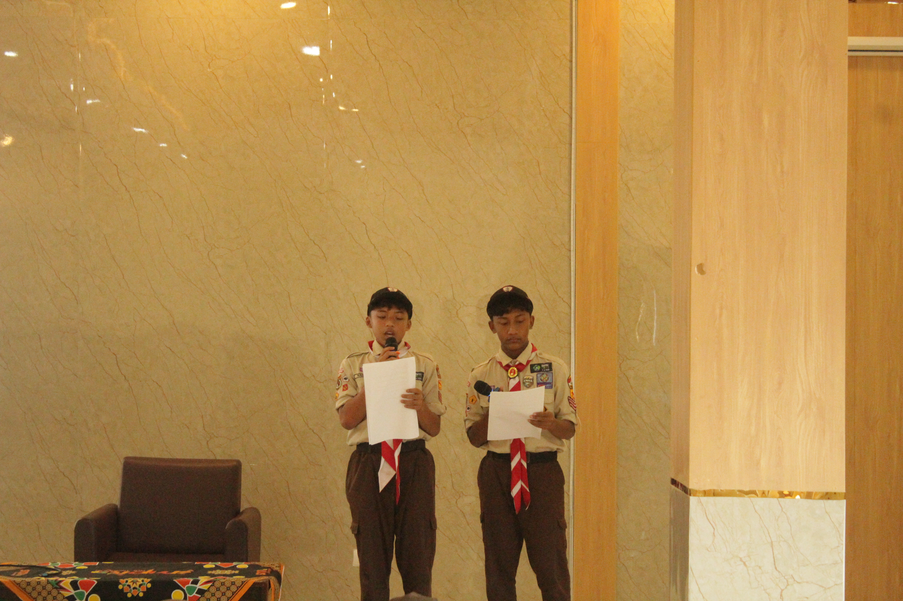

☪
Pembinaan Al-Qur'an
Membangun kecintaan terhadap Al-Qur'an dan kebiasaan baik.
Mencetak generasi Islami, cerdas, dan berakhlak mulia.
Islami • Cerdas • BerprestasiMembangun generasi Qurani yang berilmu, berakhlak mulia, mandiri, dan berprestasi.

SMPIT Nur Hidayah berkomitmen menghadirkan pendidikan yang memperhatikan perkembangan akademik, spiritual, karakter, dan potensi setiap peserta didik.
Melalui lingkungan belajar yang positif, siswa didorong untuk menjadi pribadi yang bertanggung jawab, mandiri, peduli, dan terus berkembang.
Selengkapnya tentang kami →Mendampingi siswa mengembangkan ilmu, iman, dan keterampilan.
Membangun kecintaan terhadap Al-Qur'an dan kebiasaan baik.
Mengembangkan pengetahuan, rasa ingin tahu, dan kemampuan berpikir.
Melatih kedisiplinan, tanggung jawab, kemandirian, dan kepedulian.
Mendorong siswa untuk berkarya dan mengembangkan keterampilan.
Pendidikan adalah perjalanan untuk terus belajar dan berkembang.
Suasana pendidikan yang mendorong siswa menjadi pribadi yang lebih baik.
Membiasakan perilaku santun, jujur, disiplin, dan bertanggung jawab.
Memberi ruang bagi siswa untuk belajar, berkreasi, dan mengenali bakatnya.
Mendorong kerja sama antara siswa, guru, keluarga, dan lingkungan.
Inspirasi untuk terus belajar dan bertumbuh.
Pendidikan yang baik membantu anak berkembang dalam ilmu, karakter, dan kepedulian.
Semangat PendidikanKenali cerita, informasi, dan inspirasi dari dunia pendidikan.

Mengenal pentingnya semangat belajar dan kebiasaan baik setiap hari.
Baca selengkapnya →
Kegiatan bersama menjadi kesempatan untuk berlatih karakter dan kepedulian.
Baca selengkapnya →
Setiap siswa memiliki kesempatan untuk belajar, berkarya, dan berkembang.
Baca selengkapnya →Hubungi sekolah untuk memperoleh informasi lebih lanjut.
Kami menyediakan informasi untuk masyarakat dan keluarga siswa.
Jl. Kahuripan Utara Raya, Kelurahan Sumber, Kecamatan Banjarsari, Kota Surakarta, Jawa Tengah 57138